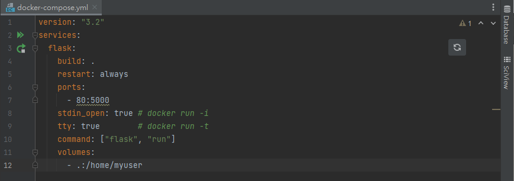

Basically, a Dockerfile is composed of a line-by-line instruction sequence. A line of instructions is a layer of data for an Image. An Image relies on such layers of data to accumulate, and finally compiles the desired image file. , like building a house.
Explanation of the doctorfile parameter:
FROM: base image
Copy: various metadata of the source file will be preserved. Such as read, write, execute permissions, file change time, etc.
ENV: setting the environment of app, port and path
WORKDIR: create a working directory
CMD: There can only be one CMD instruction in a Dockerfile, and CMD is the instruction executed when the container is running.
For the test page, we define "test request menu link" to test the content in the index, and each of the page would also have "test request page" to test their contend.
The idea of the test here is simple, only testing weather a word or a sentence after "assert b" is existing in the page.
.pylintrc is the config for pylint, .coveragerc is the config for coverage and setup.py is a config file for pytest
pytest --pylint --cov
Run tests, Lint, and Coverage report